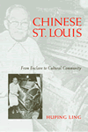
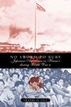

|
Beyond
Segregation
Multiracial and Multiethnic Neighborhoods in the United States
Maly, Michael T.
Sharpening our understanding of urban America's integrated neighborhoods
288 pp • 6x9 • Fall 2004
paper 1-59213-135-2
EAN 978-1-59213-135-8
cloth 1-59213-134-4
EAN 978-1-59213-134-1
|

|
Chinese
St. Louis
From Enclave to Cultural Community
Ling, Huping
Forming a community around cultural heritage
296 pp • 6x9 • Fall 2004
paper 1-59213-039-9
EAN 978-1-59213-039-9
cloth 1-59213-038-0
EAN 978-1-59213-038-2
|
|
City
of Sisterly and Brotherly Loves
Lesbian and Gay Philadelphia, 1945-1972
Stein, Marc
A path-breaking history of the vibrant Philadelphia lesbian and
gay community
Now in Paperback!
480 pp • 6x9 • Fall 2004
paper 1-59213-130-1
EAN 978-1-59213-130-3
|
|
Crossing
the Neoliberal Line
Pacific Rim Migration and the Metropolis
Mitchell, Katharyne
How wealthy transnationals expose the hidden rules of everyday
life
296 pp • 6x9 • Fall 2004
paper 1-59213-084-4
EAN 978-1-59213-084-9
cloth 1-59213-083-6
EAN 978-1-59213-083-2
|
|
Legalizing
Gay Marriage
Mello, Michael, foreword by David Chambers
Lessons from the first states to grapple with gay marriage legislation
352 pp • 6x9 • Fall 2004
paper 1-59213-079-8
EAN 978-1-59213-079-5
cloth 1-59213-078-X
EAN 978-1-59213-078-8
|
|
Lucasville
The Untold Story of a Prison Uprising
Lynd, Staughton
A textbook case for what is wrong with the death penalty
256 pp • 5.5x8.25 • Fall 2004
paper 1-59213-094-1
EAN 978-1-59213-094-8
cloth 1-59213-093-3
EAN 978-1-59213-093-1
|
|
Manufacturing
Suburbs
Building Work and Home on the Metropolitan Fringe
edited by Lewis, Robert
Rethinking the history of suburbanization
304 pp • 6x9 • Fall 2004
paper 1-59213-086-0
EAN 978-1-59213-086-3
cloth 1-59213-085-2
EAN 978-1-59213-085-6
|
|
The
Migrant's Table
Meals and Memories in Bengali-American Households
Ray, Krishnendu
How food choices reflect the dilemmas of ethnicity
256 pp • 6x9 • Fall 2004
paper 1-59213-096-8
EAN 978-1-59213-096-2
cloth 1-59213-095-X
EAN 978-1-59213-095-5
|
|
My
Life as a Colombian Revolutionary
Reflections of a Former Guerrillera
Vásquez Perdomo, María Eugenia, translated by Lorena Terando, introduction
by Arthur Schmidt
A gripping memoir of a woman who left middle-class life to become
a member of a Colombian militant group
312 pp • 6x9 • Fall 2004
paper 1-59213-101-8
EAN 978-1-59213-101-3
cloth 1-59213-100-X
EAN 978-1-59213-100-6
|
|
No-Collar
The Humane Workplace and Its Hidden Costs
Ross, Andrew
A revealing look at New Economy workplaces
Now in Paperback!
312 pp • 6x9.125 • Fall 2004
paper 1-59213-150-6
EAN 978-1-59213-150-1
|

|
No
Sword to Bury
Japanese Americans in Hawai'i during World War II
Odo, Franklin S.
The story of another "Band of Brothers"
New in Paperback!
336 pp • 6x9 • Fall 2003
paper 1-59213-270-7
EAN 978-1-59213-270-6
|

|
Philadelphia
Magazine's Ultimate Restaurant Guide
White, April, foreword by Maria Gallagher
From Philadelphia Magazine, a restaurant guide to the city's
best food
192 pp • 5.5x8.25 • Fall 2004
paper 1-59213-146-8
EAN 978-1-59213-146-4
|
|
A
Pleasing Birth
Midwives and Maternity Care in the Netherlands
De Vries, Raymond
How midwifery policy in the Netherlands can help mothers in the
United States
296 pp • 6x9 • Fall 2004
paper 1-59213-103-4
EAN 978-1-59213-103-7
cloth 1-59213-102-6
EAN 978-1-59213-102-0
|

|
The
Spirits of America
A Social History of Alcohol
Burns, Eric
A history of "the great American thirst"
New in Paperback!
344 pp • 6.125x9 • Fall 2003
paper 1-59213-269-3
EAN 978-1-59213-269-0
|
|
Transforming
Knowledge
Minnich, Elizabeth Kamarck
A new edition of a widely influential book engages with contemporary
critiques of inequality and with recent global events
2nd Edition
312 pp • 6x9 • Fall 2004
paper 1-59213-132-8
EAN 978-1-59213-132-7
cloth 1-59213-131-X
EAN 978-1-59213-131-0
|

|
The
World Next Door
South Asian American Literature and the Idea of America
Srikanth, Rajini
Literature that takes us beyond identity to empathy
304 pp • 6x9 • Fall 2004
cloth 1-59213-080-1
EAN 978-1-59213-080-1
|
Click here
to download the catalog. |